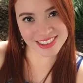
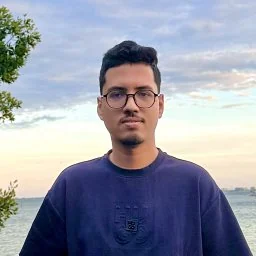
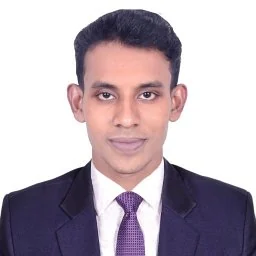
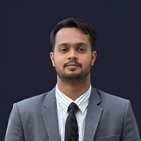
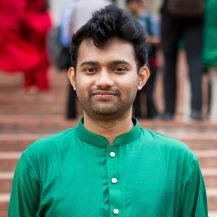
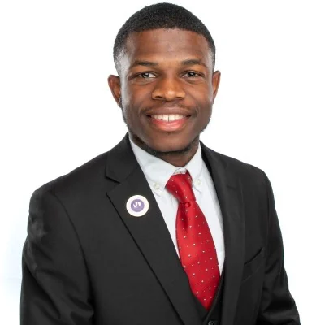
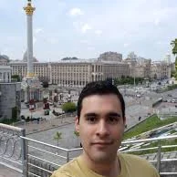

People
We study quantum and electromagnetic systems through theory, computation, and experiments. Students and postdocs own their projects, write their own papers, and get support for their next career step.

Prof. Aleksandr Krasnok
Assistant Professor of Electrical and Computer Engineering at Florida International University and director of the QTM Lab, with a courtesy appointment in the Knight Foundation School of Computing and Information Sciences. His research covers complex-frequency electrodynamics, quantum control, photonics, sensing, and quantum-hardware diagnostics. He co-founded the FIU Quantum Initiative and is a core member of FIU's university-wide quantum committee.
Professional profile and CV · akrasnok@fiu.edu · Office EC 3202C
Postdoctoral and graduate researchers

Ingrid Torres, Ph.D.Postdoctoral FellowFIU, 2023 to presentQuantum sensing, nanofabrication, cryogenic dielectric resonators, quantum photonics, metasurfaces, and cryogenic wireless sensing.Google Scholar
Aditya BhowmikGraduate ResearcherFIU, 2025 to presentComplex-frequency wave physics, microwave and optical interfaces, system modeling, and measurements.
Md. Alim UddinGraduate Research AssistantFIU, May 2026 to presentQuantum photonics, electromagnetic modeling, metamaterial-enabled sensing, and computational methods.
Md. Nakibul IslamGraduate Research AssistantFIU, August 2026 to presentQuantum photonics, electrodynamics, metamaterials, and computational modeling.
Research collaborators and undergraduate researchers
- Laraib NiazResearch Collaborator2024 to presentQuantum simulations of correlated phases and complex-frequency control in many-body systems.
- Nafiul KhalidUndergraduate ResearcherComputer Science, FIU Honors College, 2025 to presentQiskit and PennyLane programming, quantum machine learning, and learning resources for quantum-computing education.
Senior design teams
- Handheld moisture tomography device for wall inspection (2026 to present). Sean Avendano, Andy Lara, Pablo Lucero, and Degle Martinez. The team builds non-destructive moisture mapping behind drywall with 60 GHz radar and guided two-dimensional scanning.
- Low-cost air quality kit (Fall 2023 to Spring 2024). Caio Moreti Koga, Jasim Bhatti, Adrian Ortega, Andres Lara, and Nurain Chowdhury.
Alumni

Muhammad Mahmudul Hasan, Ph.D.Nokia, since August 2026Postdoctoral Research Associate, FIU, 2025 to 2026Quantum sensors, THz photonics, diamond TeraFETs, and mid-IR and THz devices. Deepanshu Trivedi, Ph.D.Design Engineer, imec USA Florida, Superconducting Electronics teamPh.D., FIU, December 2025Co-supervised with Prof. Arjuna Madanayake; complex-frequency control, circuit and cavity QED, Fano-qubits, and scattering anomalies.
Deepanshu Trivedi, Ph.D.Design Engineer, imec USA Florida, Superconducting Electronics teamPh.D., FIU, December 2025Co-supervised with Prof. Arjuna Madanayake; complex-frequency control, circuit and cavity QED, Fano-qubits, and scattering anomalies.- Asif Hassan, Ph.D.Antenna Engineer in industryFormer FIU postdoctoral fellowAntenna design, microwave photonics, RF prototyping, and measurements.
- Md. Ibrahim KhalilGraduate Researcher, FIU, 2025 to January 2026Silicon microring resonators, electromagnetic solver cross-validation, temporal coupled-mode modeling, and free-carrier effects in silicon photonics.

Quesnay LundyUniversity of Florida; founder and CEO of EcoPulse FoundationUndergraduate research intern, 2023 to 2024Wireless power transfer, coil measurements, and CST electromagnetic simulations.
William Segura AlvarezArmy research laboratories
Collaborating groups
We work with Arjuna Madanayake's group at FIU, Andrea Alù's group at CUNY, Sergey Kutsaev at RadiaBeam, Andrew Cleland at the University of Chicago, and Michael Kelly at Argonne National Laboratory in the United States; D. M. Broun at Simon Fraser University and Leonid Belostotski at the University of Calgary in Canada; and the Sokoloff, Pascal, and Callegari team at LAPLACE, Toulouse (CNRS), in France. Joint projects combine circuit and electromagnetic models with superconducting-resonator, optical, and plasma experiments.